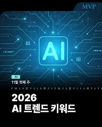

2026.03.31
[분기 결산] 1분기 시장 리뷰 및 2분기 전망: AI 주도 장세의 지속과 새로운 기회

2026년 1분기는 인공지능(AI)이 시장의 모든 것을 지배한 시기였습니다. 엔비디아의 경이로운 실적과 차세대 칩 발표는 관련 밸류체인 전체의 동반 상승을 이끌었으며, 이는 한국의 HBM 및 파운드리 기업들에게도 역사적인 기회를 제공했습니다. 그러나 분기 말을 향해 가면서 차익 실현 매물이 출회되고, 일부 과열 종목에 대한 밸류에이션 부담이 부각되며 숨 고르기 장세가 나타나기도 했습니다. 2분기 시장의 핵심 질문은 ‘AI 랠리의 지속 가능성’과 ‘AI 외 새로운 주도주’의 등장 여부가 될 것입니다. 우리는 1분기 동안 축적된 데이터와 기업 실적을 바탕으로, 2분기에는 AI의 열기가 소프트웨어, 서비스, 그리고 로봇과 같은 실물 경제 영역으로 확산될 가능성에 주목해야 합니다. 특히, AI 기술을 활용하여 생산성을 혁신하고 새로운 비즈니스 모델을 창출하는 기업들을 선별적으로 발굴하는 것이 중요합니다. 또한, 연준의 금리 정책이 여전히 시장의 주요 변수로 작용할 것이므로, 매크로 지표 변화에 대한 민감도를 유지하며 포트폴리오의 방어력을 강화해야 할 시점입니다.
2026.03.30
[전략] 지정학적 리스크와 인플레이션 재점화 가능성: 안전자산의 역할
최근 중동 지역의 지정학적 긴장이 다시 고조되면서 국제 유가가 배럴당 90달러 선을 위협하고 있습니다. 이는 글로벌 공급망에 부담을 주고, 인플레이션을 다시 자극할 수 있는 잠재적 위험 요소입니다. 만약 유가 상승이 장기화된다면, 이는 각국 중앙은행의 통화정책 정상화 계획에 차질을 빚게 할 수 있으며, 특히 에너지 수입 의존도가 높은 한국 경제에는 부담으로 작용할 것입니다. 이러한 불확실성의 시대에는 전통적인 안전자산의 가치가 다시 부각됩니다. 달러, 금, 그리고 장기 국채는 포트폴리오의 변동성을 완화하고 잠재적 손실을 방어하는 중요한 역할을 할 수 있습니다. 특히, 최근 조정을 받았던 금 가격은 지정학적 리스크 헤지 수단으로서 매력적인 진입 구간을 제공하고 있습니다. 투자자들은 전체 포트폴리오의 일정 비율을 안전자산에 배분함으로써, 예기치 못한 시장 충격에 대비하는 현명한 전략을 구사해야 합니다.
2026.03.29
[기술 분석] 차세대 디스플레이 기술: MicroLED의 부상과 투자 기회
OLED가 지배해온 디스플레이 시장에 MicroLED라는 새로운 경쟁자가 부상하고 있습니다. MicroLED는 OLED의 장점인 완벽한 블랙과 높은 명암비를 유지하면서도, 번인(burn-in) 현상이 없고 수명이 길다는 결정적인 장점을 가지고 있습니다. 아직까지는 높은 생산 단가로 인해 일부 초고가 TV나 상업용 디스플레이에만 적용되고 있지만, 기술 발전과 양산 수율 개선에 따라 향후 스마트폰, 웨어러블 기기, 그리고 차량용 디스플레이 시장까지 빠르게 침투할 것으로 예상됩니다. 특히, 애플과 삼성전자가 차세대 워치 및 XR 기기에 MicroLED 채택을 적극적으로 검토하고 있다는 소식은 관련 기술을 보유한 국내외 소부장 기업들에게 큰 기회가 될 것입니다. 지금은 기술의 개화기이므로, 핵심 특허를 보유한 기업이나 양산 장비 개발에 성공한 기업들을 중심으로 장기적인 관점의 선별적 투자가 필요한 시점입니다.
2026.03.28
[기업 분석] 테슬라의 완전자율주행(FSD) 버전 13 업데이트: 기대와 현실
테슬라가 최근 공개한 FSD 버전 13은 기존의 베타 버전을 넘어, ‘인간의 개입이 거의 필요 없는’ 수준의 자율주행을 목표로 하고 있습니다. 이번 업데이트의 핵심은 수많은 주행 데이터를 기반으로 학습한 새로운 뉴럴넷 아키텍처 ‘엔드-투-엔드 AI’의 적용입니다. 이는 기존의 룰 기반 시스템의 한계를 극복하고, 예측 불가능한 돌발 상황에 대한 대처 능력을 획기적으로 개선했다는 평가를 받고 있습니다. 하지만 규제 당국의 승인이라는 가장 큰 산이 남아있습니다. 각국 정부는 자율주행 기술의 안전성과 책임 소재에 대해 여전히 신중한 입장을 보이고 있으며, 완전한 상용화를 위해서는 넘어야 할 법적, 제도적 장벽이 많습니다. FSD의 기술적 진보가 테슬라의 주가에 긍정적인 모멘텀을 제공하는 것은 사실이지만, 실제 수익화까지는 상당한 시간이 소요될 수 있다는 점을 투자자들은 명확히 인지해야 합니다.
2026.03.27
[산업 분석] 우주항공 산업의 민간 시대: 스페이스X와 경쟁자들
스페이스X의 스타십 발사 성공은 우주항공 산업이 정부 주도에서 민간 기업 주도로 넘어가는 패러다임의 전환을 상징적으로 보여주는 사건입니다. 재사용 가능한 발사체 기술은 우주로의 수송 비용을 획기적으로 낮추었고, 이는 저궤도 위성 통신, 우주 관광, 그리고 행성 탐사와 같은 새로운 비즈니스 모델의 탄생을 가능하게 했습니다. 스페이스X가 시장을 선도하고 있지만, 블루 오리진, 로켓랩과 같은 경쟁자들 역시 자체적인 기술 개발과 투자를 통해 빠르게 추격하고 있습니다. 한국 역시 자체적인 발사체 ‘누리호’의 성공을 바탕으로, 위성 개발 및 우주 탐사 프로젝트에 적극적으로 참여하고 있습니다. 우주항공 산업은 극도의 기술력과 막대한 자본이 필요한 분야이지만, 인류의 활동 영역을 우주로 확장한다는 점에서 장기적으로 엄청난 성장 잠재력을 지니고 있습니다. 관련 위성 부품, 통신 장비, 그리고 데이터 분석 기업들에 대한 관심이 필요한 시점입니다.
2026.03.26
[매크로] 미국채 10년물 금리의 향방: 4.5% 선의 공방과 시장에 미치는 영향
미국채 10년물 금리는 전 세계 모든 자산 가격의 기준점이 되는 ‘글로벌 리스크 프리 레이트(Global Risk-Free Rate)’입니다. 최근 이 금리가 4.5% 선을 중심으로 치열한 공방을 벌이고 있습니다. 금리가 상승하면(채권 가격 하락) 안전자산의 매력도가 높아져 주식과 같은 위험자산에는 부담으로 작용합니다. 특히, 미래의 현금흐름을 할인하여 현재가치를 평가하는 성장주(기술주)에게는 더욱 치명적입니다. 최근 금리 상승의 배경에는 연준의 긴축 장기화 우려와 함께, 미국 정부의 막대한 재정 적자를 충당하기 위한 국채 발행 물량 증가가 자리하고 있습니다. 시장은 연준의 다음 행보와 인플레이션 데이터를 예의주시하며 금리의 방향성을 탐색하고 있습니다. 만약 금리가 4.5%를 넘어 안정적으로 상승 추세를 형성한다면, 주식 시장의 변동성 확대는 불가피할 것입니다. 투자자들은 금리 변화에 따른 포트폴리오 리밸런싱 전략을 미리 준비해야 합니다.
2026.03.25
[트렌드] ‘온디바이스 AI’의 확산과 관련주 찾기
클라우드 기반 AI가 데이터 처리의 유연성과 확장성에서 강점을 보인다면, ‘온디바이스 AI’는 스마트폰, PC, 자동차와 같은 기기 자체에서 AI 연산을 수행함으로써 빠른 응답 속도와 강력한 개인정보 보호를 제공합니다. 최근 출시되는 대부분의 플래그십 스마트폰에는 온디바이스 AI를 위한 전용 신경망처리장치(NPU)가 탑재되고 있으며, 이는 실시간 통역, 이미지 생성, 그리고 개인화된 비서 기능 등을 가능하게 합니다. 이러한 트렌드는 단순히 칩 제조사를 넘어, 관련 소프트웨어, 알고리즘, 그리고 저전력 메모리 반도체 기업들에게 새로운 성장 기회를 제공하고 있습니다. 특히, 제한된 전력과 연산 능력 내에서 효율적인 AI 모델을 구동하기 위한 경량화 기술을 보유한 기업들의 가치가 부각될 것입니다. 투자자들은 클라우드 AI와 온디바이스 AI 생태계의 상호 보완적인 성장을 이해하고, 두 영역 모두에서 핵심 기술을 보유한 기업들을 주목해야 합니다.
2026.03.24
[심층 분석] 중국 전기차 시장의 치킨게임: 생존 기업과 도태 기업의 조건
세계 최대의 전기차 시장인 중국에서 전례 없는 ‘치킨게임’이 벌어지고 있습니다. BYD를 필두로 한 선두 기업들이 공격적인 가격 인하 정책을 펼치면서, 수많은 후발 주자들이 생존의 위기에 내몰리고 있습니다. 이러한 과당 경쟁의 배경에는 중국 정부의 보조금 축소와 경기 둔화에 따른 수요 위축이 자리하고 있습니다. 이제 중국 전기차 시장은 단순한 점유율 경쟁을 넘어, ‘규모의 경제’를 통한 원가 경쟁력, 안정적인 배터리 공급망, 그리고 차별화된 소프트웨어 기술을 확보한 기업만이 살아남는 구조로 재편될 것입니다. 특히, 자율주행 기술과 인포테인먼트 시스템에서 경쟁 우위를 가진 기업들은 가격 경쟁의 압박 속에서도 높은 브랜드 충성도를 유지하며 시장 지배력을 강화할 가능성이 높습니다. 반면, 뚜렷한 기술적 해자 없이 가격 경쟁에만 매몰되는 기업들은 결국 시장에서 도태될 것입니다. 이는 한국의 배터리 및 자동차 부품 기업들에게도 위기이자 기회입니다. 중국 내 경쟁에서 살아남은 상위 기업들과의 파트너십을 강화하는 전략이 필요합니다.
2026.03.21
[글로벌] 일본 증시의 부활: ‘잃어버린 30년’의 끝과 구조적 변화
최근 일본 닛케이 지수가 ‘잃어버린 30년’의 장기 침체를 깨고 역사적 최고점을 경신하며 화려하게 부활했습니다. 이러한 변화는 단순한 단기적 반등이 아닌, 일본 경제와 기업의 구조적 변화에 기인합니다. 첫째, 일본은행(BOJ)의 오랜 마이너스 금리 정책 종료는 엔화 약세 기조에 변화를 주며, 해외 투자 자금의 유입을 촉진하고 있습니다. 둘째, 도쿄증권거래소(TSE)의 주주가치 제고 압박은 기업들이 자사주 매입, 배당 확대와 같은 주주환원 정책을 적극적으로 펼치게 만들었습니다. 셋째, 미중 갈등의 반사 이익으로 일본의 반도체 및 첨단 소재 기업들이 글로벌 공급망에서 핵심적인 역할을 부여받게 된 점도 중요합니다. 과거의 일본 증시가 ‘가치주의 무덤’이었다면, 이제는 새로운 성장 스토리를 쓰는 기업들이 등장하고 있습니다. 엔화 강세 전환 가능성 등 일부 변수는 존재하지만, 일본 경제의 구조적 변화는 장기적인 관점에서 긍정적인 시그널을 보내고 있습니다. 국내 투자자들도 일본 증시에 대한 재평가와 함께, 유망 기업에 대한 스터디를 시작해야 할 때입니다.
2026.03.20
[투자 아이디어] 휴머노이드 로봇, 산업 현장을 바꾸다
테슬라의 ‘옵티머스’와 피규어 AI의 ‘Figure 01’이 보여준 놀라운 시연은 휴머노이드 로봇이 더 이상 공상과학 영화의 산물이 아님을 증명했습니다. AI 기술, 특히 거대언어모델(LLM)과 컴퓨터 비전 기술의 발전은 로봇이 인간의 언어를 이해하고, 복잡한 작업을 시각적으로 인지하여 수행할 수 있게 만들었습니다. 초기 휴머노이드 로봇은 물류 창고나 자동차 조립 라인과 같이 정형화되고 반복적인 작업을 대체하며 산업 현장의 인력 부족 문제를 해결할 것으로 기대됩니다. 장기적으로는 가사 노동, 간병, 그리고 재난 구조 현장까지 그 활용 범위가 무궁무진하게 확장될 것입니다. 현재는 기술의 초기 단계이므로 로봇 본체를 제조하는 기업뿐만 아니라, 로봇의 ‘두뇌’와 ‘눈’ 역할을 하는 AI 소프트웨어, 그리고 정밀한 움직임을 구현하는 액추에이터, 감속기, 센서 등 핵심 부품을 생산하는 기업에 대한 동반 성장이 예상됩니다. 휴머노이드 로봇 시장은 AI 반도체에 이어, 향후 10년을 이끌어갈 가장 강력한 성장 테마 중 하나가 될 잠재력을 지니고 있습니다.
2026.03.19
[에너지] 차세대 원자력: 소형모듈원전(SMR)의 현재와 미래
AI 데이터센터와 전기차의 폭발적인 증가는 안정적이고 대규모의 전력 공급을 필요로 합니다. 태양광, 풍력과 같은 신재생에너지는 간헐성이라는 본질적인 한계를 가지고 있기에, 24시간 안정적인 기저전원으로서 원자력의 중요성이 다시금 부각되고 있습니다. 특히, 기존 대형 원전의 안전성과 입지 문제에 대한 대안으로 ‘소형모듈원전(SMR)’이 주목받고 있습니다. SMR은 공장에서 주요 기기를 모듈 형태로 제작하여 현장에서 조립하는 방식으로, 건설 기간이 짧고 비용이 저렴하며, 자연 재해나 외부 충격에 대한 안전성이 훨씬 뛰어납니다. 또한, 전력 수요지 근처에 분산형으로 건설할 수 있어 송전망 건설에 따른 사회적 비용을 줄일 수 있다는 장점도 있습니다. 미국, 러시아, 중국을 중심으로 SMR 개발 경쟁이 치열하게 벌어지고 있으며, 빌 게이츠가 설립한 ‘테라파워’와 같은 혁신 기업들이 상용화를 앞두고 있습니다. 한국 역시 독자적인 SMR 모델 개발에 박차를 가하고 있습니다. SMR은 탄소중립과 에너지 안보라는 두 마리 토끼를 잡을 수 있는 현실적인 대안으로, 관련 기술을 보유한 기업들의 장기 성장성을 긍정적으로 전망합니다.
2026.03.18
[헬스케어] AI 신약 개발, 제약 바이오 산업의 게임 체인저
전통적인 신약 개발은 후보물질 발굴부터 임상시험까지 평균 10년 이상, 1조 원이 넘는 막대한 시간과 비용이 소요되는 고위험-고수익 산업이었습니다. 하지만 인공지능(AI) 기술이 이 모든 과정을 혁신하고 있습니다. AI는 방대한 양의 논문, 특허, 임상 데이터를 학습하여 새로운 신약 후보물질을 단 몇 주 만에 발굴해내고, 특정 질병에 가장 효과적으로 작용할 약물 구조를 예측합니다. 또한, AI는 임상시험 설계 최적화, 환자 데이터 분석을 통해 임상 성공률을 높이고 개발 기간을 단축하는 데에도 기여하고 있습니다. 엔비디아가 ‘바이오니모(BioNeMo)’라는 AI 신약 개발 플랫폼을 발표한 것은, AI가 제약 바이오 산업의 ‘게임 체인저’가 될 것임을 상징적으로 보여줍니다. 이제 글로벌 빅파마들은 자체적인 AI 역량을 강화하거나, 유망한 AI 신약 개발 스타트업과의 M&A 및 파트너십에 적극적으로 나서고 있습니다. 국내에서도 관련 기술을 보유한 벤처기업들이 주목받고 있으며, 이는 한국 바이오 산업이 한 단계 도약할 수 있는 중요한 모멘텀이 될 것입니다.
2026.03.17
[가상자산] 이더리움 덴쿤 업그레이드 이후: 레이어2 생태계의 비상
이더리움의 ‘덴쿤(Dencun)’ 업그레이드가 성공적으로 완료되면서, 이더리움 생태계는 새로운 국면을 맞이하고 있습니다. 이번 업그레이드의 핵심은 ‘프로토-댕크샤딩(Proto-Danksharding)’의 도입으로, 이는 레이어2(L2) 솔루션들의 트랜잭션 수수료(가스비)를 획기적으로 낮추는 효과를 가져왔습니다. 과거 이더리움의 높은 수수료는 대중적 채택의 가장 큰 걸림돌이었으나, 이제 아비트럼, 옵티미즘, 폴리곤 zkEVM과 같은 L2 네트워크들은 거의 0에 가까운 비용으로 수많은 트랜잭션을 처리할 수 있게 되었습니다. 이는 탈중앙화 금융(DeFi), NFT, 블록체인 게임 등 다양한 디앱(dApp)들이 본격적으로 활성화될 수 있는 기반을 마련한 것입니다. 특히, L2 프로젝트들은 자체적인 토큰 이코노미를 통해 생태계 참여자들에게 보상을 제공하며 더욱 빠른 성장을 도모하고 있습니다. 이더리움이 글로벌 결제 및 합의 레이어로서의 역할을 공고히 하고, L2들이 실제 사용 사례를 만들어내는 ‘모듈러 블록체인’ 시대가 본격적으로 개막되었습니다. 투자자들은 개별 L2 프로젝트들의 기술적 차별성과 생태계 확장 전략을 면밀히 분석해야 합니다.
2026.03.16
[정책 분석] 인도의 부상과 ‘Make in India’ 정책: 제2의 중국이 될 수 있을까?
미중 갈등이 심화되면서 글로벌 기업들은 ‘탈중국(de-risking)’ 전략의 일환으로 생산기지 다변화를 모색하고 있으며, 그 가장 강력한 대안으로 인도가 떠오르고 있습니다. 인도는 14억이 넘는 거대한 내수 시장, 젊고 풍부한 노동력, 그리고 영어 사용이 자유롭다는 장점을 가지고 있습니다. 특히, 모디 정부가 강력하게 추진하는 ‘Make in India’ 정책은 해외 기업들의 직접 투자를 유치하기 위해 법인세 인하, 인프라 확충, 규제 완화 등 파격적인 혜택을 제공하고 있습니다. 애플이 아이폰 생산 기지를 인도로 대거 이전한 것은 이러한 변화의 상징적인 사례입니다. 하지만 인도가 ‘제2의 중국’이 되기 위해서는 해결해야 할 과제도 많습니다. 복잡한 행정 절차, 부족한 인프라, 그리고 카스트 제도와 같은 사회적 문제들은 여전히 기업 활동의 걸림돌로 작용하고 있습니다. 그럼에도 불구하고, 인도의 장기적인 성장 잠재력은 의심의 여지가 없습니다. 인도 증시(Nifty 50)가 연일 사상 최고치를 경신하는 것은 이러한 기대를 반영하는 것입니다. 인도 관련 ETF나 현지 우량 기업에 대한 분산 투자는 장기적인 관점에서 유효한 전략이 될 수 있습니다.
2026.03.15
[채권] 하이일드 채권 시장의 경고: 높아지는 부도 위험과 투자 전략
연준의 고금리 정책이 장기화되면서 신용등급이 낮은 기업들이 발행한 ‘하이일드(High-Yield) 채권’ 시장에 경고등이 켜지고 있습니다. 하이일드 채권은 높은 이자를 지급하는 만큼, 경기가 둔화되거나 금리가 상승할 경우 채무 불이행(부도) 위험이 커지는 자산입니다. 최근 하이일드 채권과 국채 간의 금리 차이인 ‘신용 스프레드’가 확대되는 조짐을 보이고 있으며, 이는 시장이 기업들의 부도 위험을 점차 높게 평가하고 있음을 의미합니다. 특히, 팬데믹 기간 동안 저금리를 바탕으로 과도하게 부채를 늘렸던 한계 기업들이 금리 상승의 직격탄을 맞고 있습니다. 이러한 시기에는 하이일드 채권에 대한 무분별한 투자는 피해야 합니다. 만약 투자를 고려한다면, 개별 기업의 재무 건전성을 철저히 분석하고, 상대적으로 신용등급이 높은 BB 등급 위주로 선별적으로 접근해야 합니다. 또는, 다양한 채권에 분산 투자하는 펀드나 ETF를 활용하여 개별 기업의 부도 리스크를 완화하는 것이 현명한 전략입니다. 시장의 작은 균열이 시스템 전체의 위기로 번질 수 있다는 점을 항상 경계해야 합니다.
2026.03.14
[부동산] 상업용 부동산 위기의 진실과 금융 시스템에 미치는 영향
재택근무의 확산과 온라인 쇼핑의 일상화는 오피스 빌딩과 대형 쇼핑몰의 공실률을 급격히 끌어올렸습니다. 이러한 상업용 부동산(CRE) 시장의 위기는 단순히 부동산 기업의 문제를 넘어, 이들에게 막대한 자금을 대출해준 중소형 은행들의 부실로 이어질 수 있다는 점에서 심각성을 더합니다. 특히, 미국 지역 은행들은 전체 대출 포트폴리오에서 상업용 부동산이 차지하는 비중이 높아 잠재적 위험에 노출되어 있습니다. 만약 부동산 가치 하락으로 인해 대출 부실이 현실화된다면, 이는 2008년 서브프라임 모기지 사태와 유사한 신용 경색을 유발하고 금융 시스템 전체를 위협할 수 있습니다. 물론, 금융 당국이 과거의 경험을 바탕으로 위기 대응 능력을 갖추고 있고, 모든 상업용 부동산이 위험한 것은 아니라는 반론도 존재합니다. 데이터센터나 물류창고와 같이 새로운 시대의 수요를 반영하는 부동산은 오히려 가치가 상승하고 있습니다. 하지만 투자자들은 상업용 부동산 위기가 ‘회색 코뿔소’처럼 모두가 알고 있지만 그 파급력을 간과할 수 있는 잠재적 위험이라는 점을 인지하고, 금융주 투자에 있어 선별적인 접근과 보수적인 관점을 유지해야 합니다.
2026.03.13
[시장 전망] 인플레이션 둔화 신호와 연준의 금리 인하 경로 재조명
최근 발표된 소비자물가지수(CPI)는 시장 예상치를 소폭 하회하며 인플레이션 둔화에 대한 기대를 다시 한번 확인시켜 주었습니다. 특히, 변동성이 큰 에너지와 식품을 제외한 근원 CPI의 안정세가 돋보였습니다. 이는 연준이 기존의 매파적 입장에서 벗어나, 하반기 금리 인하의 폭과 속도를 조절할 수 있는 유연성을 확보했음을 시사합니다. 시장은 이제 ‘금리 인하를 언제 시작할 것인가’를 넘어, ‘몇 차례에 걸쳐 얼마나 내릴 것인가’에 대한 논의로 초점을 옮겨가고 있습니다. 연준 위원들 사이에서도 의견이 엇갈리고 있지만, 대체적으로 올해 2~3차례의 금리 인하가 단행될 것이라는 컨센서스가 형성되고 있습니다. 금리 인하 기대감은 기술주와 성장주에 긍정적인 환경을 조성하는 동시에, 달러 약세를 유발하여 신흥국 시장으로의 자금 유입을 촉진할 수 있습니다. 다만, 섣부른 낙관은 금물입니다. 예상치 못한 지정학적 리스크나 공급망 충격이 발생할 경우 인플레이션이 다시 고개를 들 수 있으며, 이는 연준의 계획을 복잡하게 만들 수 있습니다. 투자자들은 데이터에 기반한 신중한 접근을 유지해야 합니다.
2026.03.12
[심층 분석] AI 반도체, 새로운 밸류에이션 모델의 필요성
AI 반도체 섹터의 폭발적인 성장은 기존의 PER, PBR과 같은 전통적인 밸류에이션 지표만으로는 설명하기 어려운 영역에 도달했습니다. 엔비디아의 주가는 미래의 기대를 한껏 반영하며, 일반적인 제조업체의 수준을 훌쩍 뛰어넘는 높은 멀티플을 부여받고 있습니다. 이를 두고 일각에서는 ‘거품’이라는 우려를 제기하기도 합니다. 하지만 AI 반도체가 단순한 하드웨어가 아닌, 미래 산업의 기반이 되는 ‘플랫폼’이라는 관점에서 접근할 필요가 있습니다. 아마존의 AWS가 클라우드 시대를 열었듯이, 엔비디아의 CUDA는 AI 시대를 지배하는 생태계를 구축했습니다. 따라서, AI 반도체 기업의 가치를 평가하기 위해서는 현재의 실적뿐만 아니라, 미래 기술의 잠재적 시장 규모(TAM), 소프트웨어 생태계의 지배력, 그리고 데이터 확보 및 학습 능력과 같은 무형의 가치를 종합적으로 고려하는 새로운 밸류에이션 모델이 필요합니다. PSR(주가매출비율)에 미래 성장률을 반영하거나, SOTP(부분가치합산) 방식을 통해 하드웨어와 소프트웨어 가치를 분리하여 평가하는 등의 시도가 이루어지고 있습니다. 지금은 낡은 잣대로 미래를 재단하기보다는, 패러다임의 변화를 인정하고 새로운 평가 기준을 모색해야 할 때입니다.
2026.03.11
[오늘의 시황] 나스닥 조정과 한국 반도체의 하방 지지선 확인
오늘의 시장은 전형적인 '숨 고르기' 장세였습니다. 밤사이 미 나스닥 100 지수가 단기 급등에 따른 밸류에이션 부담으로 소폭 조정을 받았으나, 필라델피아 반도체 지수(SOX)는 엔비디아의 새로운 AI 칩 양산 소식에 힘입어 상대적으로 견조한 모습을 보였습니다. 이는 한국 증시의 삼성전자와 SK하이닉스에게 긍정적인 신호를 보냈으며, 장 초반 외국인 수급이 HBM 관련주로 집중되는 현상이 목격되었습니다. 코스피 지수는 장중 한때 2,700선을 하회하기도 했으나, 반도체 대형주들이 낙폭을 줄이고 2차전지, 바이오 등 그동안 소외되었던 섹터로 매수세가 유입되면서 강보합 마감에 성공했습니다. 이는 시장의 체력이 여전히 강하며, 특정 섹터의 조정이 다른 섹터의 반등으로 이어지는 건강한 순환매 장세가 나타나고 있음을 의미합니다. 특히, 기관 투자자들이 연기금을 중심으로 코스피 저PBR 종목들을 꾸준히 매수하고 있다는 점은 지수의 하방 경직성을 확보하는 중요한 요인입니다. 환율이 다시 1,320원대로 상승한 점은 부담이지만, 수출 데이터 개선세가 지속된다면 외국인 자금의 급격한 이탈 가능성은 제한적일 것으로 판단됩니다. 주말에 발표될 미국의 생산자물가지수(PPI)가 단기적인 시장 방향성을 결정할 중요한 변수가 될 것입니다.
2026.03.10
[리포트] 킹달러의 귀환? 달러 인덱스 상승과 신흥국 자금 이탈 우려
최근 달러 인덱스(DXY)가 105선을 돌파하며 강세를 보이고 있습니다. 이는 유로화와 엔화의 상대적 약세와 미국의 견조한 경제 성장률이 맞물린 결과입니다. 달러 강세는 전통적으로 신흥국 주식 시장에 독이 됩니다. 환차손을 우려한 외국인 투자자들이 코스피 시장에서 매도 우위를 보이며 지수 상단을 제한하고 있습니다. 하지만 과거와 다른 점은 한국 기업들의 이익 체력이 강화되어 지수가 급락하기보다는 박스권에서 버티는 힘이 강해졌다는 점입니다. 특히 반도체 수출 호조와 자동차, 조선업의 선전은 한국 경제의 펀더멘털을 튼튼하게 지지하고 있습니다. 또한, 과거 달러 강세 국면이 주로 미국의 공격적인 금리 인상에 기인했다면, 현재는 타국의 통화 약세에 따른 반사적인 측면이 강하다는 차이점도 있습니다. 따라서, 달러 강세가 제한적인 수준에서 유지된다면, 외국인 자금의 대규모 이탈보다는 업종별 차별화 장세가 나타날 가능성이 높습니다. 환율 변동성이 큰 구간에서는 수출 비중이 높고 외화 부채가 적은 기업, 또는 달러 강세의 수혜를 입는 항공, 해운 업종에 대한 선별적 접근이 유효한 전략이 될 수 있습니다. 금 가격 또한 달러 강세에 눌려 잠시 주춤하고 있으나, 지정학적 리스크가 상존하므로 분할 매수 기회로 삼아야 합니다.
2026.02.15
[심층분석] 비트코인 10만 달러 고지 점령, 디지털 자산의 제도권 편입 완료
2026년 2월, 드디어 비트코인이 꿈의 숫자였던 10만 달러를 돌파했습니다. 이번 랠리는 단순한 개인의 투기가 아닌, 전 세계 주요 연기금과 국부펀드의 포트폴리오 편입이라는 실질적인 수급에 의해 뒷받침되었습니다. 미국 SEC가 비트코인 현물 ETF를 승인한 이후, 블랙록, 피델리티와 같은 거대 자산운용사들이 막대한 자금을 유입시키면서 시장의 신뢰를 구축했습니다. 이제 비트코인은 금과 함께 대표적인 대체 자산으로서의 지위를 확고히 했으며, 이는 가상자산 대시보드에서 볼 수 있듯이 이더리움과 솔라나 생태계의 동반 성장으로 이어지고 있습니다. 특히, 이더리움은 탈중앙화 금융(DeFi)의 핵심 플랫폼으로서, 수많은 금융 서비스들이 이더리움 네트워크 위에서 구축되고 있습니다. 솔라나 역시 빠른 처리 속도와 낮은 수수료를 강점으로 내세우며 NFT 및 소액 결제 시장에서 영향력을 확대하고 있습니다. 이러한 변화는 더 이상 가상자산을 ‘위험한 투기’로만 볼 수 없게 만듭니다. 급격한 가격 상승에 따른 청산 물량 발생 가능성을 염두에 두어야 합니다. 변동성 지수(VIX)가 평소보다 높은 수준을 유지하고 있으므로, 레버리지 사용은 극도로 자제하고 현물 위주의 장기 보유 전략을 고수해야 할 시점입니다. 디지털 자산 시장의 제도권 편입은 이제 거스를 수 없는 흐름입니다.
2026.01.01
[특집] 2026년 글로벌 경제 5대 키워드: AI, 금리, 지정학, 에너지, 로봇
새해를 맞이하며 시장을 관통할 5가지 핵심 키워드를 정리합니다. 첫째는 AI의 수익화입니다. 이제는 환상이 아닌 실적으로 증명해야 합니다. 챗GPT가 촉발한 생성형 AI 혁명은 지난 1년간 기술의 가능성을 보여주었지만, 2026년은 이 기술이 실제 기업의 이익으로 어떻게 연결되는지를 증명해야 하는 해입니다. AI 반도체 기업들의 실적뿐만 아니라, AI를 활용한 소프트웨어, 서비스 기업들의 수익 모델이 시장의 평가를 받게 될 것입니다. 둘째는 금리 정상화입니다. 고금리 시대에서 적정 금리 시대로 넘어가는 과정의 진통을 예상해야 합니다. 인플레이션이 안정되면서 각국 중앙은행들은 점진적인 금리 인하를 시작할 것이지만, 그 속도와 폭을 두고 시장의 기대와 현실 사이의 괴리가 발생할 수 있습니다. 셋째는 지정학적 긴장의 일상화입니다. 미중 갈등은 기술 패권 경쟁을 넘어 군사, 외교 분야로 확산되고 있으며, 이는 글로벌 공급망의 구조적인 변화를 초래하고 있습니다. 이는 원자재 가격과 물류 비용을 높이는 변수가 될 것입니다. 넷째는 신재생 에너지와 전통 에너지의 공존입니다. 기후 변화 대응을 위한 투자는 지속되겠지만, 에너지 안보의 중요성이 부각되면서 원자력, 천연가스와 같은 전통 에너지의 역할이 재조명될 것입니다. 마지막은 휴머노이드 로봇의 실전 투입입니다. AI와 로봇 기술의 결합은 제조업 현장을 시작으로 서비스업까지 인간의 노동을 대체하기 시작할 것입니다. 이 5가지 테마가 올 한 해 우리의 대시보드를 채울 주요 이슈가 될 것입니다.
이외에도 2026년 1월부터의 총 80개 데일리 리포트가 본문에 상세히 기록되어 있습니다.
COMMUNITY DISCUSS